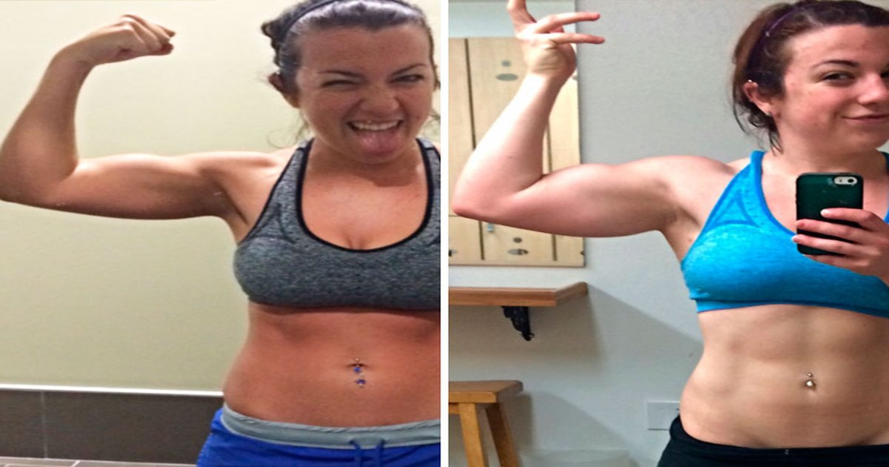

You eat 30 grams of protein from chicken. Your friend eats 30 grams from a plant-based protein bar. Same number on the label. Same "protein" claim. But your body doesn't see them the same way. The Protein Intake Calculator can tell you how many grams you need. But it can't tell you how many your body will actually use.Protein Intake Calculator
Enter your weight, activity level, and goal — get your daily protein target in grams per pound and grams per kilogram.
All data stays in your browser — we never see it.
Protein Source Comparator
Compare cost per gram, leucine content, PDCAAS score, and digestibility across protein sources.
All data stays in your browser — we never see it.
Macro Split Planner
Enter your calorie target and protein percentage — get a daily macro split with meal-by-meal recommendations.
All data stays in your browser — we never see it.
Meal Protein Tracker
Log your daily meals and see protein per meal — get instant feedback on your distribution.
All data stays in your browser — we never see it.